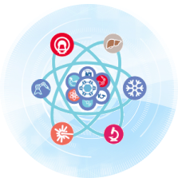
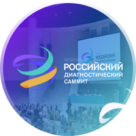
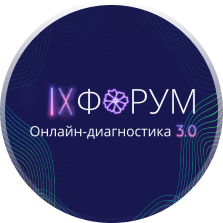

Модули (составные решения)
Система Архивирования и Передачи Изображений (PACS)
AP/IX - Программно-аппаратный комплекс для автоматизации рабочего процесса получения, хранения, обработки, просмотра, маршрутизации диагностических медицинских изображений и данных. Основные Функции AP/IX: Прием, хранение, передача, поиск исследований, уникальная идентификация, автоматическое и ручное разрешение конфликтов, обеспечение информационной безопасности хранимых данных, обеспечение аудита действий пользователей
Интеграция информационных систем (МИС, AI)
Успех реализации любого ИТ решения в клинике напрямую зависит от возможности «бесшовной» интеграции всех работающих систем, с учетом высоких требований к системам здравоохранения. Компания «Айтико» обладает более чем 20 летним опытом по проведению работ по интеграции всех цифровых систем клиники в единую платформу. Мы проводим оценку взаимосвязанности и функциональной совместимости между продуктом AP/IX и другим DICOM соответствующим оборудованием вашей клиники и, привлекая вендоров установленных систем и аппаратов, полностью отвечаем за двухстроннюю интеграцию.
Диагностическая Визуализация
Наличие универсального кросс-платформенного веб-интерфейса диагностического просмотра результатов (изображений и заключений), реализованного по технологии Zero Footprint Viewer (не требует инсталляции какого-либо ПО на компьютере пользователя). XERO Viewer имеет в своем составе инструменты мультимодальной диагностической визуализации и обработки продвинутого уровня.
Мультимедийные изображения, хранящиеся в PACS
Комплекс позволяет преобразовать любые мультимедиа данные в DICOM-совместимые, предоставить их для просмотра и сохранить в общий архив медицинских изображений. Комплекс позволяет управлять мультимедиа потоками в операционных, сохранять и преобразовывать в DICOM эндоскопические изображения, лапароскопические исследования.
Радиологическая Информационная система (РИС)
Сервисы РИС (Радиологической Информационной Системы)
Бизнес Аналитика (BI)
Модуль Бизнес Аналитики (BI ) предназначен для контроля использования диагностических ресурсов в лечебном учреждении.
Cloud – сервисы
AP\IX – готов к облаку!
Этот модуль касается планирования ваших потребностей в архивировании медицинских изображений, думая о возможном будущем росте исследований и изучая варианты облачного хранения.
Модули (составные решения)
Интеграция информационных систем МИС, AI
Система Архивирования и Передачи Изображений (PACS)
AP/IX - Программно-аппаратный комплекс для автоматизации рабочего процесса получения, хранения, обработки, просмотра, маршрутизации диагностических медицинских изображений и данных. Основные Функции AP/IX: Прием, хранение, передача, поиск исследований, уникальная идентификация, автоматическое и ручное разрешение конфликтов, обеспечение информационной безопасности хранимых данных, обеспечение аудита действий пользователей
Интеграция информационных систем МИС, AI
Интеграция информационных систем МИС, AI
AP/IX - Программно-аппаратный комплекс для автоматизации рабочего процесса получения, хранения, обработки, просмотра, маршрутизации диагностических медицинских изображений и данных. Основные Функции AP/IX: Прием, хранение, передача, поиск исследований, уникальная идентификация, автоматическое и ручное разрешение конфликтов, обеспечение информационной безопасности хранимых данных, обеспечение аудита действий пользователей
Диагностическая Визуализация
Диагностическая Визуализация
Наличие универсального кросс-платформенного веб-интерфейса диагностического просмотра результатов (изображений и заключений), реализованного по технологии Zero Footprint Viewer (не требует инсталляции какого-либо ПО на компьютере пользователя). XERO Viewer имеет в своем составе инструменты мультимодальной диагностической визуализации и обработки продвинутого уровня.
Мультимедийные изображения, хранящиеся в PACS
Мультимедийные изображения, хранящиеся в PACS
Комплекс позволяет преобразовать любые мультимедиа данные в DICOM-совместимые, предоставить их для просмотра и сохранить в общий архив медицинских изображений. Комплекс позволяет управлять мультимедиа потоками в операционных, сохранять и преобразовывать в DICOM эндоскопические изображения, лапароскопические исследования.
Радиологическая Информационная система (РИС)
Радиологическая Информационная система (РИС)
Сервисы РИС (Радиологической Информационной Системы)
Бизнес Аналитика (BI)
Бизнес Аналитика (BI)
Модуль Бизнес Аналитики (BI ) предназначен для контроля использования диагностических ресурсов в лечебном учреждении.
Cloud – сервисы
Cloud – сервисы
AP\IX – готов к облаку!
Этот модуль касается планирования ваших потребностей в архивировании медицинских изображений, думая о возможном будущем росте исследований и изучая варианты облачного хранения.
О компании
ООО «Айтико» является авторизованным бизнес-партнером Agfa HealthCare по продаже и поддержке IT-решений в области здравоохранения – комплексных систем для информатизации ЛПУ. Мы обладаем уникальным подходом, который позволяет разрабатывать технологии в масштабе всего лечебного учреждения. Наши IT решения предназначены для обработки данных в радиологии, кардиологии, маммографии и ортопедии.
Наша компания стремиться популяризировать передовые технологии визуализации, хранения и постобработки с последующим доступом к ним. Целью является повышение качества диагностики и лечение пациентов, а так же упрощение процесса работы на всех уровнях.
”
Сотрудничество с Айтико — это обеспечение лучших условий с полноценными гарантийными обязательствами.
Мы стремимся обеспечить бизнесу комфортное пространство для роста и развития, внедряя передовые системы и технологии будущего уже сегодня.
Наш успех определяется успехами наших клиентов, которым мы помогаем опережать меняющиеся тенденции здравоохранения.
Проекты
Награды
Мероприятия
-

Тема секции: "Интервенционная эндоскопия" (online мастер-класс).
Онлайн выступление: «Возможности визуализации при проведении эндоскопических интервенций».
17 мая 2023гЗаседания секции "медицина высоких технологий"
онлайн
ЗАСЕДАНИЯ СЕКЦИИ "МЕДИЦИНА ВЫСОКИХ ТЕХНОЛОГИЙ"
Тема секции Интервенционная эндоскопия (on-line мастер-класс). Он-лайн выступление- «Возможности визуализации при проведении эндоскопических интервенций».
Трансляция по ссылке https://ormiz.ru/mvt/
Организаторы: Ассоциация специалистов в области медицины высоких технологий
Всероссийская мультимедийная конференция «Медицина высоких технологий» — это онлайн площадка для профессионалов, заинтересованных во внедрении передовых медицинских технологий в повседневную клиническую практику.
-
Сибирский симпозиум: "Современные внутриутробные диагностические технологии будущему поколению" (с межрегиональным и международным участием).
Для специалистов лучевой диагностики и пренатальной диагностики.
Место проведения симпозиума: ФГБУН Институт "Международный томографический центр" СО РАН г.Новосибирск, ул. Институтская, 3A
август 2023Сибирский
симпозиумочно
Сибирский симпозиум
Сибирский симпозиум: "Современные внутриутробные диагностические технологии будущему поколению" (с межрегиональным и международным участием).
Для специалистов лучевой диагностики и пренатальной диагностики.
Место проведения симпозиума: ФГБУН Институт "Международный томографический центр" СО РАН г.Новосибирск, ул. Институтская, 3A
-

Место проведения: г. Москва, Крокус Экспо, павильон 2
Крупнейшее выставочное пространство и площадка для конгресса в индустрии.
Включает несколько мероприятий :
- - IX Российский конгресс лабораторной медицины
- - VI Итоговую конференцию МРО РОРР: «Лучевая диагностика»
- - Форум MIR: менеджмент в медицине
4-6 октября 2023гРоссийский диагностический саммит
очно
Российский диагностический саммит
Крупнейшее выставочное пространство и площадка для конгресса в индустрии.
Включает несколько мероприятий :
- IX Российский конгресс лабораторной медицины
- VI Итоговую конференцию МРО РОРР: «Лучевая диагностика»
- Форум MIR: менеджмент в медицине
-
14-16 декабря 2023г
IX ФОРУМ Онлайн-диагностика 3.0
онлайн
Если у вас возникли вопросы или хотите проконсультироваться, заполните данную форму